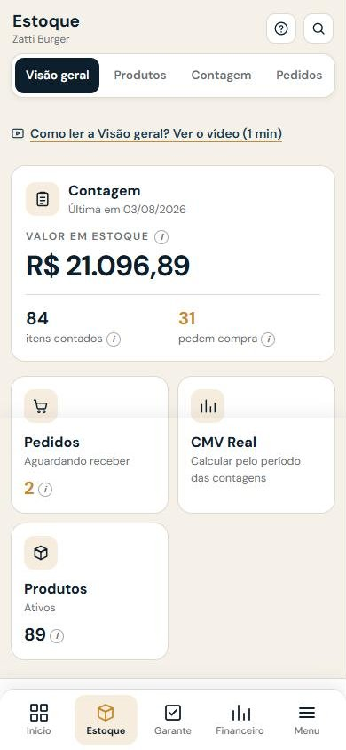

Contagem de estoque: o passo a passo para o CMV do período fechar
Sem contagem, o CMV é suposição. Como organizar o inventário por setor, registrar as perdas e calcular o CMV real entre uma contagem e outra, no papel, na planilha ou no app.
Publicado em 16/11/2026
Todo dono de restaurante já ouviu a fórmula do CMV: estoque inicial, mais compras, menos estoque final. O problema quase nunca está na fórmula. Está no estoque final, o número que depende de alguém contar o que tem na câmara, na prateleira e no freezer.
Quando a contagem sai com pressa, com item esquecido ou contado duas vezes, o CMV do período nasce errado. E o dono decide em cima dele. A Abrasel, na cartilha sobre CMV, resume em uma frase: sem inventário, não existe CMV confiável.

"Não é o que foi comprado. Não é o que está parado no estoque. É o que saiu do estoque e virou venda."Vinícius Zanetti, no capítulo Estrutura do livro Restaurante no Controle
A frase define o CMV e explica por que a contagem importa. O que saiu do estoque só aparece quando alguém conta o que ficou. Esta matéria trata desse passo. A fórmula e os erros mais comuns no cálculo estão em CMV não é compras do mês, e a comparação com o custo das fichas técnicas está em CMV teórico x CMV real.
Por que contar o estoque se as compras já estão anotadas?
Porque compra não é consumo. A caixa de bacon comprada na segunda pode estar inteira na câmara no domingo. Se o dono soma as compras e chama de custo, o mês em que ele abasteceu a câmara parece pior do que foi. E o mês seguinte parece melhor.
A cartilha da Abrasel lista o que o gestor não sabe sem inventário: quanto realmente tem em estoque, quanto foi consumido e onde ocorreram perdas. E responde a quem acha a contagem uma perda de tempo: muitos empreendedores veem o inventário como burocracia, quando ele é instrumento de controle financeiro.
Como fazer a contagem de estoque no restaurante?
A contagem que funciona é a que qualquer pessoa da equipe consegue repetir do mesmo jeito. Cinco cuidados fazem a diferença.
- Divida por setor. Câmara fria, freezer, estoque seco, bebidas, embalagens. Cada setor tem a sua lista, na ordem em que os itens estão na prateleira. Quem conta não pula de um lugar para o outro e não esquece o que está no fundo.
- Use a mesma unidade da ficha técnica. Se a ficha usa quilo de bacon, a contagem também. Contar "três pacotes" quando o pacote muda de tamanho entre um fornecedor e outro estraga a conta.
- Conte o que está aberto. O pote de molho pela metade e o saco de queijo aberto também são estoque. Pese ou estime por fração, sempre do mesmo jeito.
- Defina quem conta e quando. A mesma pessoa ou a mesma dupla, no mesmo horário, antes de abrir ou depois de fechar, sem a cozinha produzindo ao lado.
- Feche a contagem com data. O número só vale para o dia em que foi contado. Ele é o estoque final de um período e o estoque inicial do próximo.
No capítulo Garante, o livro trata de responsabilidade. A regra serve para o inventário.
"Cada processo implementado tem um responsável definido, com nome e função. Não um departamento. Não a equipe."Vinícius Zanetti, no capítulo Garante do livro Restaurante no Controle
Com que frequência fazer inventário no restaurante?
Não há um prazo único. A Abrasel recomenda inventários regulares e a análise do CMV semanal ou mensalmente, e lembra que CMV não é indicador anual. O livro separa pela importância do item. Nas rotinas diárias do capítulo Garante está a conferência do estoque de insumos críticos. Nas mensais, a revisão do estoque e das condições comerciais com fornecedores.
Numa hamburgueria ou pizzaria, isso costuma virar três momentos de contagem.
| Quando | O que contar | Para que serve |
|---|---|---|
| Todo dia | Insumos críticos: carne, queijo, bacon, massa | Evitar falta no serviço e notar consumo fora do normal cedo |
| No dia da compra | Itens que entram no pedido | Montar o pedido com o que existe (Quanto comprar de cada insumo) |
| No fechamento do período | Tudo, setor por setor | Ter o estoque final do CMV real |
O que não pode é mudar a régua no meio do caminho. Se o período começa com contagem completa, precisa terminar com contagem completa.
Como registrar as perdas na cozinha?
Perda que não é anotada vira um buraco no CMV sem explicação. O pão que passou do ponto, o hambúrguer que caiu no chão, o creme de leite que venceu. Tudo isso sai do estoque e não vira venda.
A cartilha da Abrasel é direta: registrar perdas permite corrigir causas, ajustar porcionamento e reduzir compras desnecessárias. O registro só ajuda com três informações: o item, a quantidade e o motivo. O motivo é o que transforma a lista em decisão. Vencimento repetido aponta compra acima do consumo. Queima aponta o processo da chapa. Item que some sem motivo aponta acesso livre ao estoque, outro vilão listado pela Abrasel.
"Quando uma inconsistência é identificada, a resposta não é punição, é diagnóstico."Vinícius Zanetti, no capítulo Garante do livro Restaurante no Controle
Com o motivo na mão, o dono para de procurar culpado e passa a corrigir o processo.
Como calcular o CMV real entre duas contagens?
Com duas contagens fechadas, a conta é a da Abrasel aplicada ao período entre elas: o estoque da primeira contagem, mais o que foi comprado e recebido no meio, menos o estoque da segunda. O resultado é o custo do que saiu. Dividido pelo faturamento do mesmo período, vira percentual.
Neste exemplo, o mesmo raciocínio aplicado a um item só, em quantidade:
| Bacon, neste exemplo | Quantidade |
|---|---|
| Contagem de segunda-feira | 10 kg |
| Recebido durante a semana | 14 kg |
| Contagem da segunda seguinte | 6 kg |
| Saída no período (10 + 14 - 6) | 18 kg |
Se as fichas técnicas e as vendas da semana indicam que deveriam ter saído 15 kg, há 3 kg a explicar. Parte deles pode estar no registro de perdas. O que sobra precisa ser investigado. No capítulo Estrutura, o livro chama essa diferença de sinal de desperdício, desvio ou erro de processo.
Os períodos precisam bater. Faturamento do mês inteiro com contagens de outras datas produz um percentual que não diz nada. A referência que a Zatti usa para um CMV saudável é de 25% a 33% do faturamento.
Como o Zatti Hub faz isso
O Zatti Hub, app de gestão da Zatti, segue esse método no celular. Pela ficha de funções do app, conferida em 16 de novembro, o trabalho se divide assim:
| O dono faz | O app calcula |
|---|---|
| Cadastra produtos com unidade, preço, estoque mínimo e necessário da semana, e os setores | Valor em estoque e saldo por item |
| Faz a contagem pelo celular, por setor quando essa opção está ligada | Alertas na contagem: possível erro de contagem, compra emergencial e item sem preço |
| Registra perdas com motivo | Custo da perda |
| Marca os pedidos recebidos e digita o faturamento do período | CMV Real do período entre duas contagens: (estoque inicial + compras - estoque final) ÷ faturamento |
O alerta de possível erro de contagem ataca o problema do início desta matéria: o item contado errado aparece antes de virar estoque final. As movimentações podem ser exportadas em CSV.
O que o app não faz
A mesma ficha lista os limites, e eles mudam a rotina do dono.
- O estoque não dá baixa por venda e não se integra a PDV nem ao iFood. O saldo não desconta o consumo do dia: o número confiável é o da contagem.
- O faturamento usado no CMV é digitado.
- Não existe um "CMV do mês" pronto. O CMV é calculado pelo período entre contagens. Para ter o do mês, é preciso contar no fechamento.
- O app roda no navegador e pode ser instalado na tela do celular, mas não tem modo offline. A contagem precisa de internet no estoque.
O app organiza a contagem e faz a conta. A disciplina de contar continua sendo do restaurante.
Perguntas frequentes
Como fazer contagem de estoque em restaurante?
Divida por setor, com uma lista na ordem da prateleira e na mesma unidade da ficha técnica. Conte também o que está aberto, com responsável e horário fixos, e feche a contagem com data.
De quanto em quanto tempo fazer inventário no restaurante?
A Abrasel recomenda inventários regulares e análise do CMV semanal ou mensal. Os insumos críticos podem ser conferidos todo dia, e a contagem completa fecha cada período de CMV.
Por que registrar as perdas com motivo?
Porque o motivo mostra a causa. Vencimento repetido aponta compra demais, queima aponta processo e sumiço aponta acesso livre ao estoque. Sem motivo, a perda vira só um número.
O Zatti Hub dá baixa no estoque a cada venda?
Não. O estoque do app não se integra a PDV nem ao iFood e não dá baixa por venda. O saldo vem da contagem, e o CMV Real é calculado entre duas contagens.
Fontes
- Abrasel: Cartilha Custo de Mercadoria Vendida (CMV) para bares e restaurantes (janeiro de 2026), consultada em 16/11/2026.
- Vinícius Zanetti, Restaurante no Controle: capítulos Estrutura (controle de CMV e de estoque) e Garante (rotinas e responsabilidades).
- Zatti Consultoria: página do Zatti Hub e ficha interna de funções do app, conferida no perfil de teste em 16/11/2026.